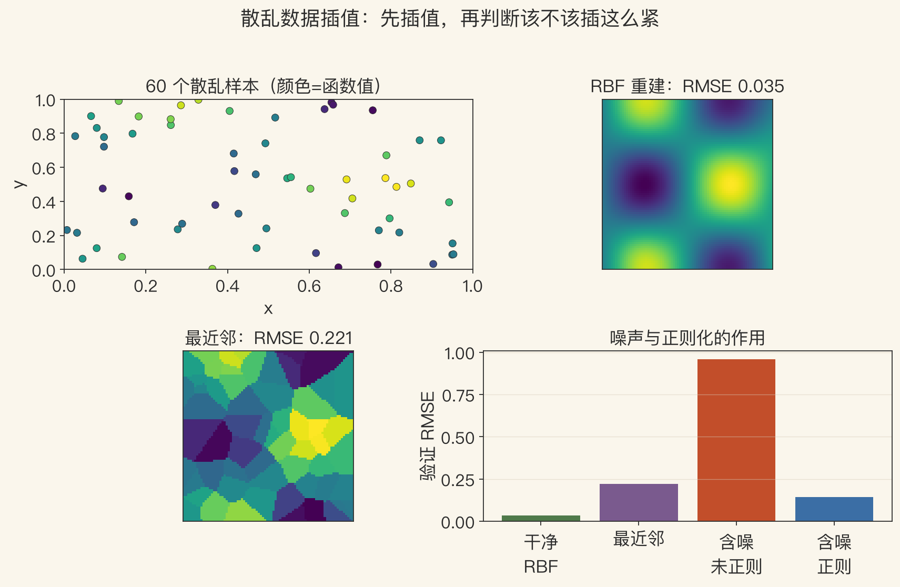
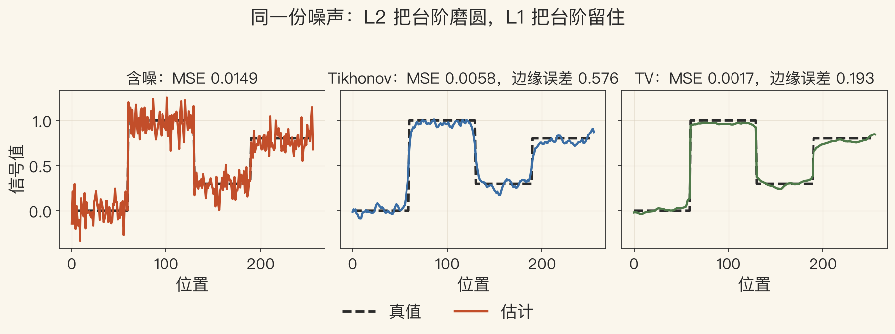
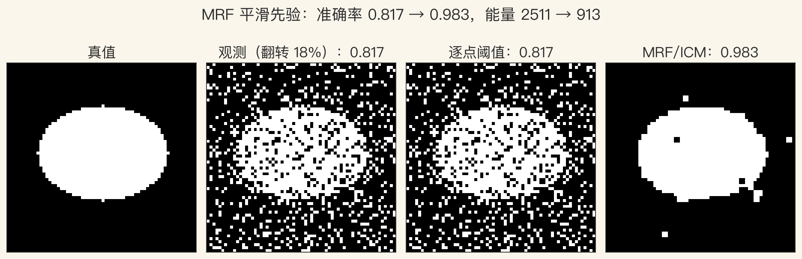

第4章补遗 · 三条路线
第4章不止最小二乘
散乱点怎么插成面？
病态问题怎么加先验？
离散标签怎么用邻域投票？
插值、正则化、MRF：连续、连续加先验、离散。
依据：原书 p.194 起
本集三条路线
散乱数据插值
变分正则化
马尔可夫随机场
正课第一百三十一集
01 / 16
原书第 194–195 页 · 散乱插值
点不规则，怎么连成面？
插值：函数穿过所有数据点。
近似：只要求靠近数据点。
规则网格不能直接套散乱点。
二维可做 Delaunay 三角化，得到 TIN。
依据：原书 pp.194–195
TIN
三角形顶点=数据点
分片线性插值
C0 连续，不一定 C1
正课第一百三十一集
02 / 16
原书第 196–197 页 · RBF
RBF：每个点放一个核
插值函数=一组基函数的加权和。
基函数以数据点为中心。
常用核：高斯、多二次、逆多二次、薄板样条。
精确穿过数据要解线性方程组，O(m³)，可能病态。
依据：原书 pp.196–197
RBF 三个代价
解方程贵
核宽度要调
噪声会被当真信号
正课第一百三十一集
03 / 16
原书第 199–202 页 · 过拟合
太简单画不出，太复杂描噪声
低阶多项式欠拟合，九次多项式过拟合。
正则化太强，又会欠拟合。
留验证集，看模型在没见过的数据上怎样。
强正则化：低方差、高偏差；弱正则化相反。
依据：原书 pp.199–202
偏差-方差
训练误差越复杂越小
验证误差才能选模型
五折交叉验证常用
正课第一百三十一集
04 / 16
图1 · RBF 散乱插值
插得越紧，错得越狠
60 个散乱样本，80×80 网格，核宽 0.25。
干净数据：RBF RMSE 0.0347，最近邻 0.2215。
加 0.15 噪声：不正则化 RBF 冲到 0.9591。
加 0.10 正则化：降到 0.1420。
依据：程序生成实验

散乱插值：RBF、最近邻与噪声｜程序生成，未用教材原图
正课第一百三十一集
05 / 16
原书第 204–205 页 · 病态问题
无数个曲面都能拟合同一组点
ill-posed：解不唯一。
ill-conditioned：输入小变化，解大变化。
inverse problem：从数据反推函数。
要量化光滑，就在解空间上定义范数。
依据：原书 pp.204–205
两个范数
一阶导积分：膜
二阶导积分：薄板样条
一阶管别乱跳，二阶管别乱弯
正课第一百三十一集
06 / 16
原书第 206–208 页 · 变分正则化
能量=数据项+平滑项
真实场景常常分段连续，边界允许跳。
受控连续样条：局部控制哪里断、哪里折。
离散化后，二次型最小化=解稀疏线性系统。
矩阵是 Hessian，稀疏、对称、正定。
依据：原书 pp.206–208
L2 正则化
线性、快、有唯一解
会把边缘磨平
保边要换鲁棒惩罚
正课第一百三十一集
07 / 16
原书第 209–210 页 · TV
L1：允许台阶存在
把二次惩罚换成 p 范数，p<2 更偏向分段连续。
L1 又叫总变分 TV。
TV 更保不连续，还是凸问题，有全局唯一解。
代价：小纹理会被当噪声，产生阶梯伪影。
依据：原书 pp.209–210
L2 vs L1
L2：橡皮筋，台阶拉成斜坡
L1：跳变付一次固定代价
TV 求解要迭代
正课第一百三十一集
08 / 16
图2 · Tikhonov vs TV
MSE 降了，边缘不一定保住
256 点台阶信号，噪声 σ=0.12。
Tikhonov λ=5：MSE 0.0058，边缘误差 0.5764。
TV λ=0.5：MSE 0.0017，边缘误差 0.1926。
总变差：含噪 37.84 → Tikhonov 5.04 → TV 2.62。
依据：程序生成实验

Tikhonov 与 TV：同一份噪声，边缘保不保｜程序生成，未用教材原图
正课第一百三十一集
09 / 16
原书第 213–214 页 · MRF
离散标签：数据项+先验项
MRF 定义在离散变量上，标签没有天然顺序。
贝叶斯后验=似然×先验。
最大后验=最小化负对数似然=最小化能量。
能量=数据项+先验项，先验常写成成对势。
依据：原书 pp.213–214
MRF 两项
数据项：你像哪一类
先验项：邻居是谁你跟着谁
常用 N4 邻域
正课第一百三十一集
10 / 16
原书第 216 页 · 优化
ICM 快，但容易卡局部最小
逐点翻转，能量降低就接受，这叫 ICM。
二值能量满足子模性时，图割能保证全局最小。
多标签一般没有精确解。
所以才有模拟退火、alpha-expansion、信念传播。
依据：原书 p.216
方法取舍
ICM：快，局部最优
图割：二值子模全局最优
模拟退火：能跳出局部
正课第一百三十一集
11 / 16
原书第 219–225 页 · 多标签与 CRF
多标签 NP-hard，只能近似
alpha-expansion / alpha-beta swap：拆成一串二值问题。
信念传播：树上精确，带环只能近似。
CRF：后验直接依赖观测。
dense CRF：全连接，用高斯核+均值场近似。
依据：原书 pp.219–225
MRF vs CRF
MRF：生成模型
CRF：判别模型
dense CRF：长程相似性
正课第一百三十一集
12 / 16
图3 · 二值 MRF
邻居把孤立错点拉回来
64×64 二值图，18% 像素被翻转。
逐点阈值：准确率 0.8174，能量 2511，孤立像素 326。
N4 + ICM 6 次：准确率 0.9832，能量 913，孤立像素 0。
ICM 只保证局部最优，换初始化可能不同。
依据：程序生成实验

二值 MRF：逐点阈值与 ICM｜程序生成，未用教材原图
正课第一百三十一集
13 / 16
原书第 222–227 页 · 交互式分割
用户画几笔，系统解能量
用户画前景/背景 strokes，系统解二值 MRF。
区域项：像素像不像该区域的统计。
边界项：相邻标签不同就付代价。
CRF 让平滑项跟着图像梯度走。
依据：原书 pp.222–227
三项约束
strokes：硬约束
区域项：软约束
边界项：软约束
正课第一百三十一集
14 / 16
路线选择 · 本集边界
先问未知量是什么
规则网格、噪声小、要快：双线性/双三次或 TIN。
散乱、高维、要光滑：RBF 或核回归。
病态反演、要加先验：变分/正则化。
离散标签、有邻域：MRF/CRF。
依据：本集总结；原书 pp.194–227
lab 只做四种基线
RBF / Tikhonov / TV / ICM
未实现图割/BP/dense CRF
合成分数只对照概念
正课第一百三十一集
15 / 16
第4章闭环 · 作业
数据项+先验项，一条主线
未知量从连续函数变成离散标签。
求解从线性系统变成组合优化。
作业：RBF vs 最近邻；Tikhonov vs TV；阈值 vs MRF。
下一章：把先验换成从数据里学到的先验。
依据：本集回顾
三个作业
散乱点：RBF/最近邻+正则化
台阶：Tikhonov/TV 边缘误差
二值图：阈值/MRF
正课第一百三十一集
16 / 16